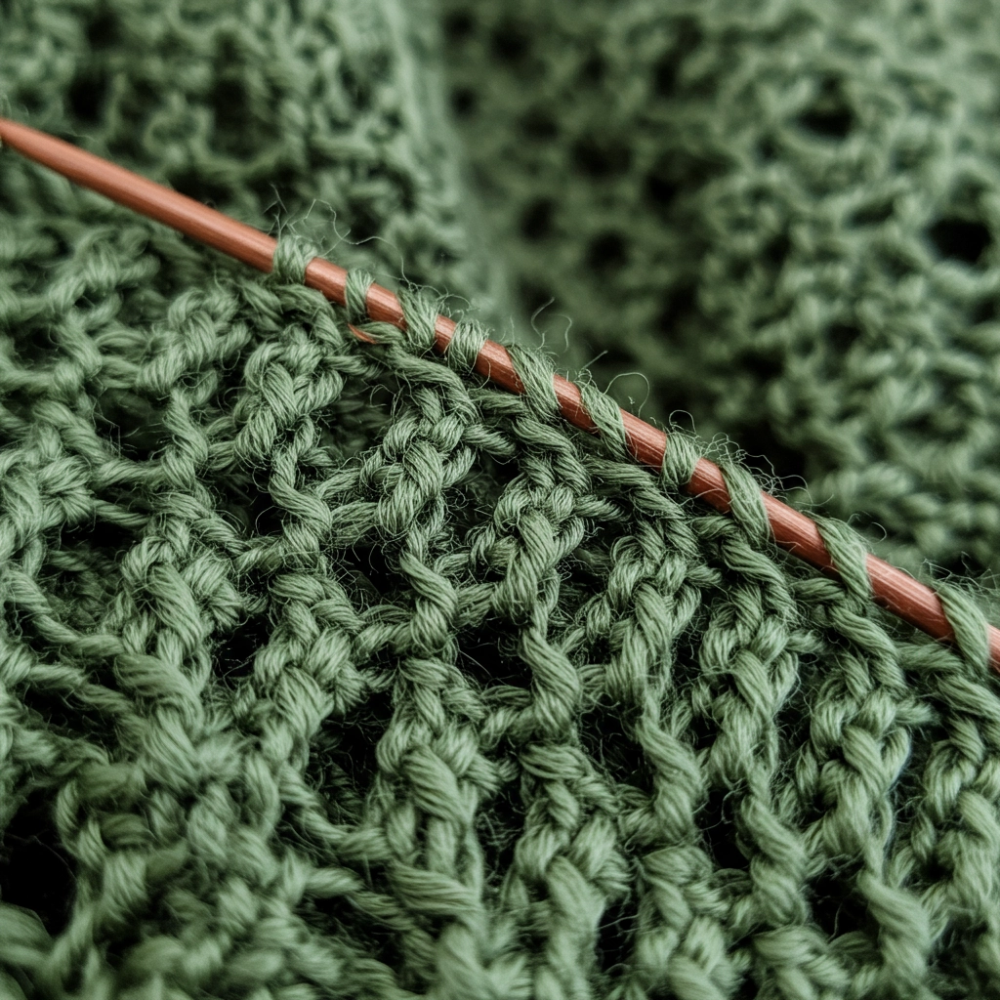
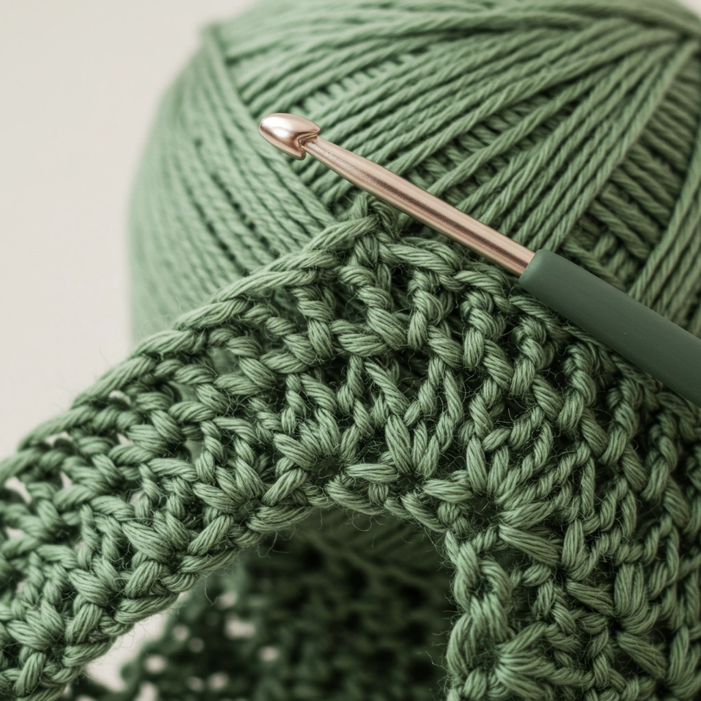
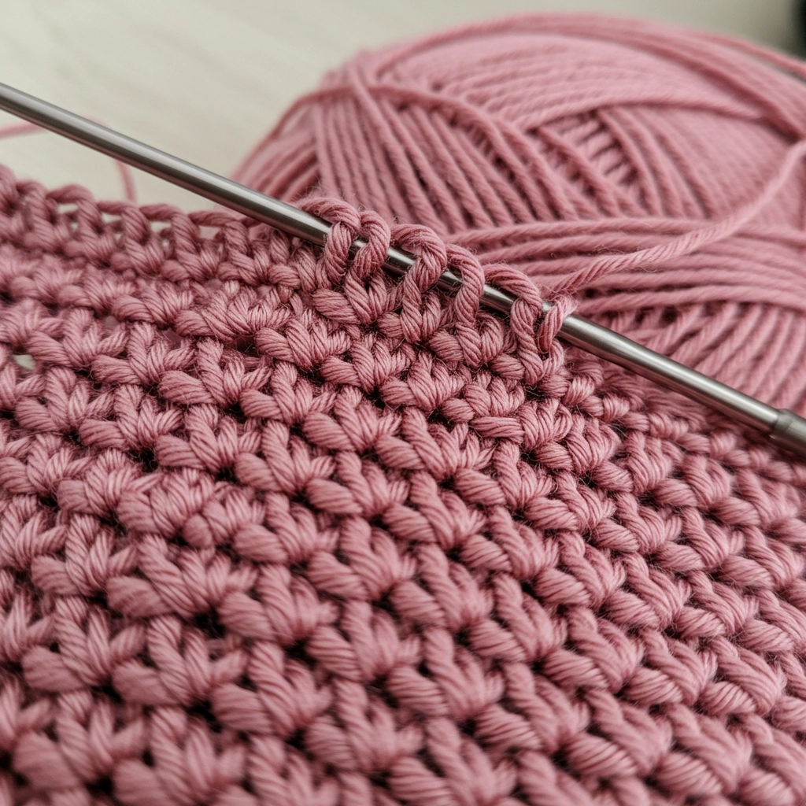
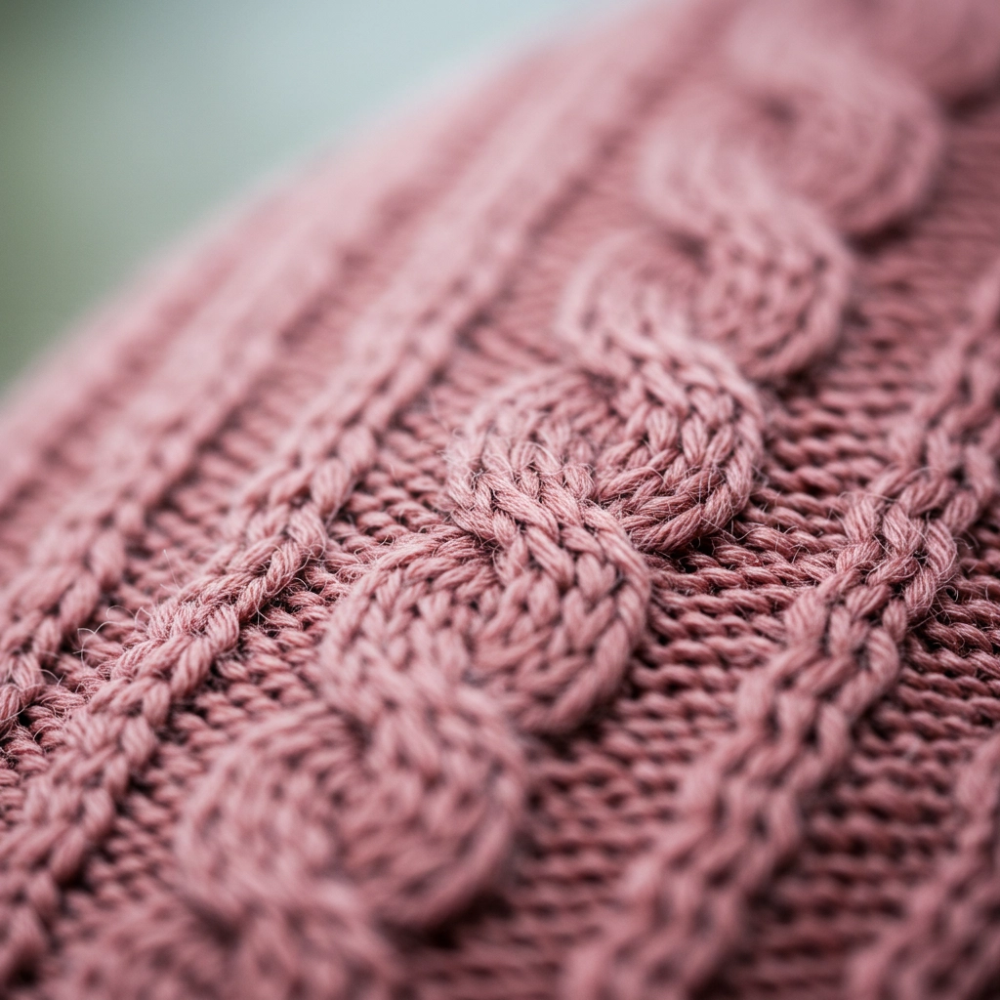
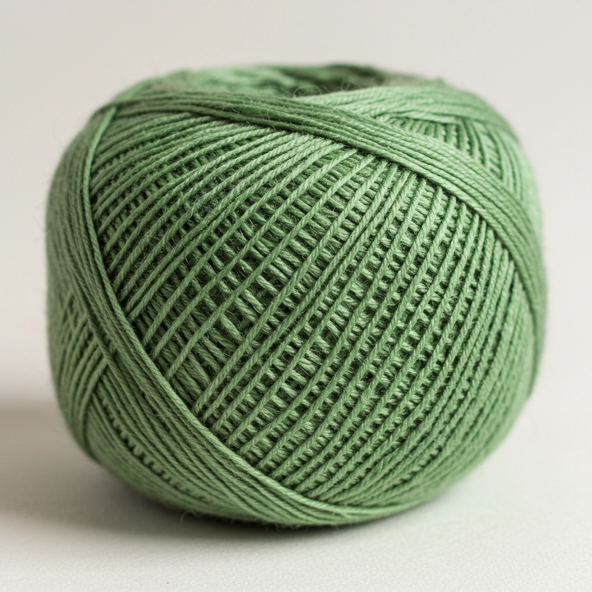

Diary
「 日々の編み目に、想いをこめて 」

雨の日の編み物時間
2025.06.07
外は雨で肌寒いけど、こんな日はゆっくり編み物をするのにぴったり。お気に入りの音楽をかけながら、編み目に集中してリフレッシュできた。

新しい毛糸でモチーフ編み
2025.05.26
お気に入りの毛糸を見つけて、モチーフ編みを始めた。色合いがとっても綺麗で編んでいるだけで気分が上がる。次は何を作ろうかな？

はじめてのアフガン編み
はじめてのアフガン編み
チャレンジ
2025.04.09
今日はアフガン編みに初挑戦！最初は目がそろわなくて苦戦したけど、少しずつリズムがつかめてきた気がする。完成が楽しみ！
友達へのプレゼント完成
2025.03.20
大好きな友達の誕生日に向けて編んでいた手袋が完成！渡すのが楽しみ。喜んでくれるといいな。編み物で気持ちを込められるのが嬉しい。

新しい編み図に挑戦
2025.02.05
今日はネットで見つけた少し難しめの編み図に挑戦。途中で間違えたりして何度もほどいたけど、少しずつ形になってきて嬉しい。編み物って奥が深いな。

冬に向けてのマフラー作り
2025.01.10
寒い季節が近づいてきたので、温かいマフラーを編み始めました。ふわふわの毛糸で編むのは楽しいけど、目が揃うように集中しています。完成が待ち遠しい！